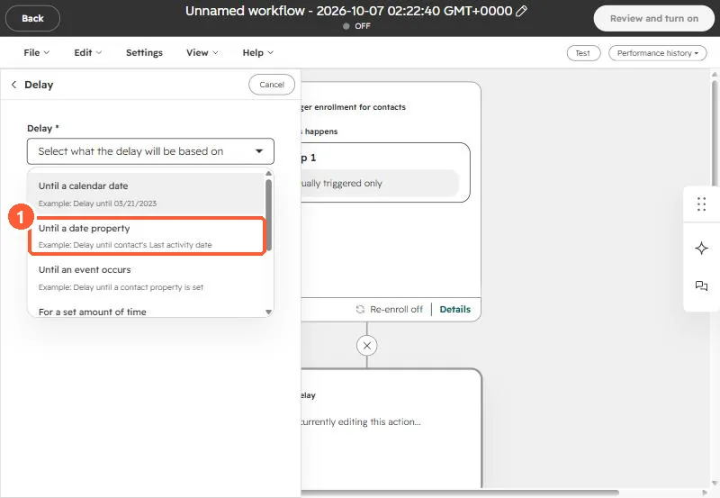
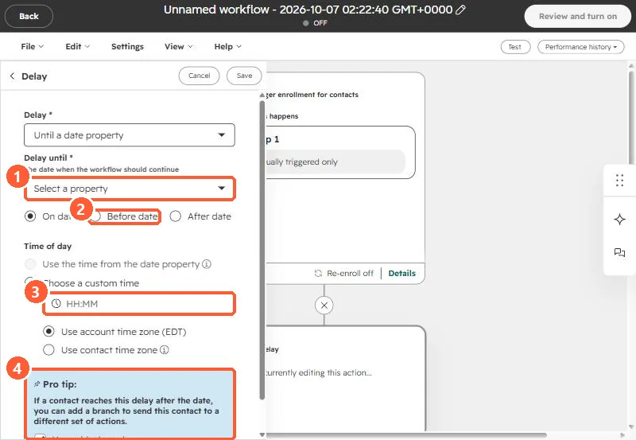

Short answer
Store the event date in a date picker property and use the workflow delay Until a date property, set to Before date for each reminder. One workflow then works for every session, because each contact waits for their own date. A healthcare practice's registration form used a dropdown of dates, which meant updating the form, the options, and the workflow branches for every new workshop. Moving to a date property was the recommendation. HubSpot's delay screen also offers a branch for contacts who reach the delay after the date has passed.
1. The problem with a dropdown of dates
The practice's form asked which workshop date the person wanted, as a dropdown. Each new date meant adding an option, updating the confirmation and reminder emails, and adding branches. Old options piled up, and past workshops left old workflows behind.
2. Store a date, not a choice
Create a date picker property such as Next workshop date and set it from the registration.
3. Delay until that date
In a workflow, add a Delay and choose the type.




Use one delay per reminder, such as three days before and one day before. Contacts who register after a reminder date can be routed with the branch HubSpot suggests.
4. Name it for the role, not the date
Name the property for what it holds, not for a specific date. Why that matters is in a property named after a date.